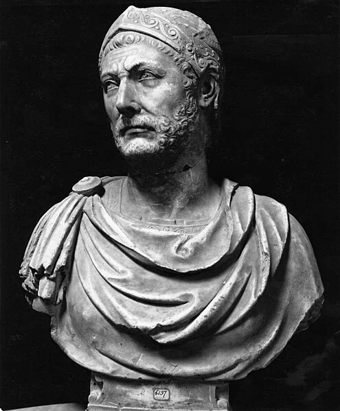

The Aftermath
One of the bloodiest days in the history of the Republic was followed by some rather drastic steps, people were buried alive in the Forum as a sacrifice, multiple cities in the south of Italy defected to Hannibal, the Macedonians declared war on Rome and the king of Syracuse entered into an alliance with Hannibal. Yet Rome endured, the Roman Republic is one of the most incredible states of this time period. The resilience and systematic dismantling of their enemies and ability to regenerate their stocks of manpower, enlisting slaves and their ability to conjure up superb commanders. The rise of Scipio Africanus is probably the greatest in Rome until Julius Caesar’s or Gaius Marius. While I would love to delve into the Battle of Zama and Scipio’s Spanish campaign, I will resist the urge. Rome returned to their policy of avoiding Hannibal where possible. They crushed his Allies and fought continuously to regain lost territories, allying themselves with additional groups throughout the Mediterranean and sending their legions all over to support them. Eventually drawing to a close 16 years of warfare.
For Rome they had become the preeminent power in the Mediterranean, their reach stretched from Spain through the western Mediterranean. Carthage’s power was greatly reduced their overseas territories stripped from them, an enormous amount of silver had to be paid to Rome and it’s fleet was reduced. For Hannibal he turned to politics attempting to reform his City after the war. He attempted to to reorganise the taxation system and reduce the overall power of the corrupt oligarchs, who wielded enormous power in Carthage. Rome however could never sit easily and pressured Carthage to exile Hannibal. He traveled the Eastern Mediterranean ending in the court of Bithynia in modern-day Turkey. His final words written in a letter “Let us relieve the Romans from the anxiety they have so long experienced, since they think it tries their patience too much to wait for an old man’s death.”